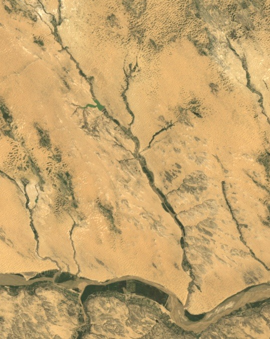
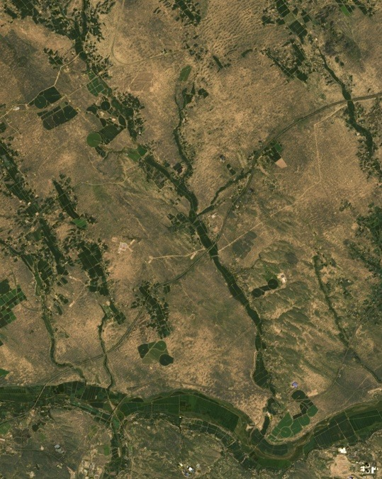
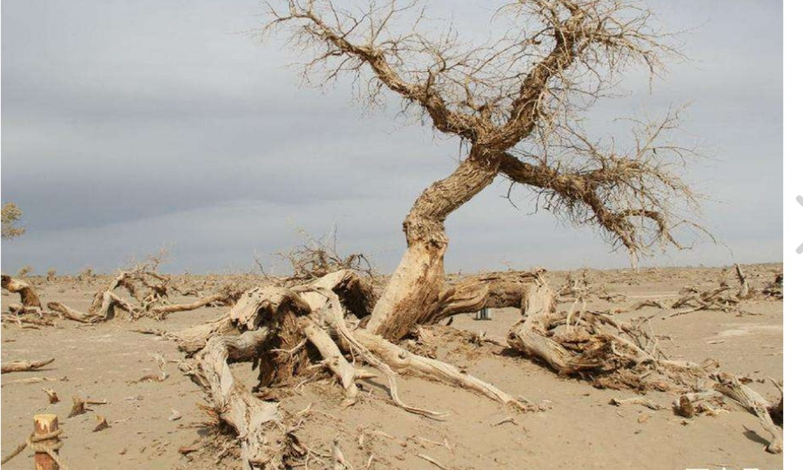
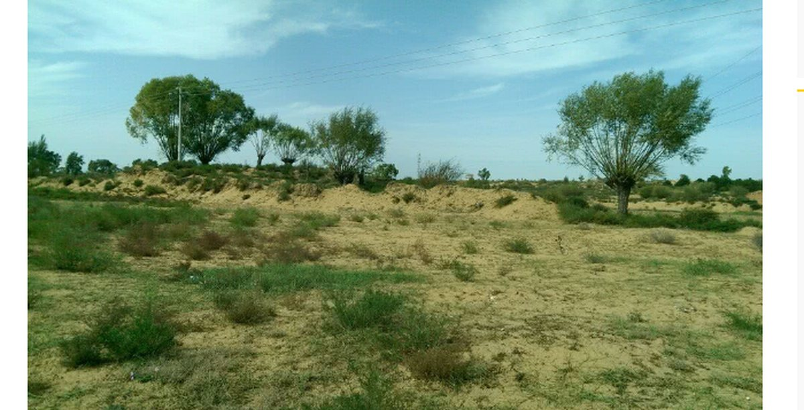
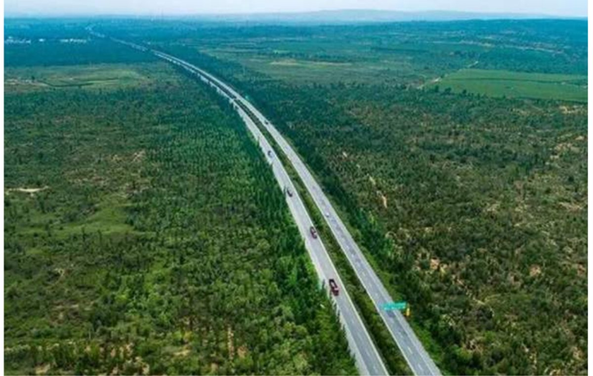
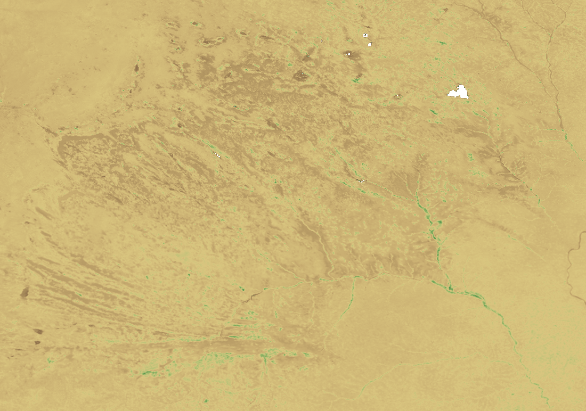
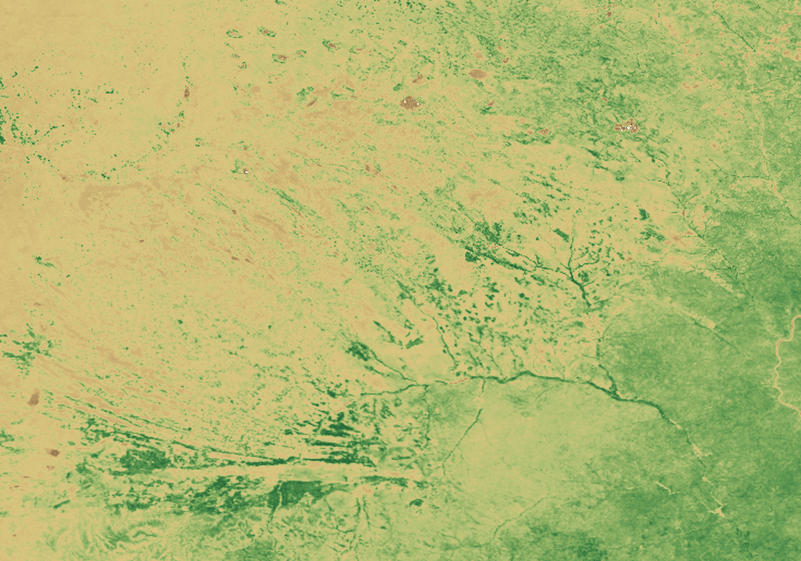
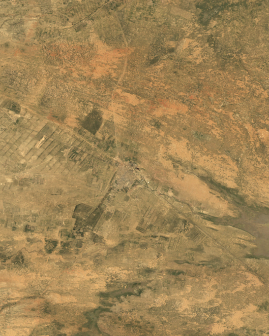
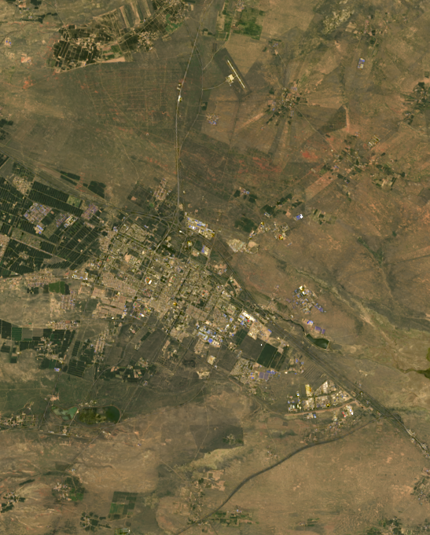

扎沙障，把风压下去
把麦草、稻草一格一格扎进沙里，地面变粗糙，贴地的风慢下来，沙子就不容易被吹走。
示意图
用法：先在左边点选要改的步骤 → 把页面手动滚到想要的位置 → 点「记录当前落点」。
落点记的是 页面滚动位置 + 视口内的元素锚点，所以换屏幕尺寸也能大致复现。
四十年，
这片沙地的植被指数接近翻倍。
左边是 1986 年 8 月的卫星影像，右边是 2025 年 8 月。
拖动中间那条线，看沙地上多出了什么。
一条时间轴，滑动看沙漠变绿洲，同时对照世界上正在变黄的地方。这是中国生态治理的一个具体切口，也是一份可以逐项核对的遥感档案。


19862025序章 · 三张实景
三张照片拍摄地点和年份各不相同，用来看治沙的三个阶段；同一地点的前后对比，看上面的卫星影像。这一屏是意象，不是证据——它负责把人留下、把主题摆出来；严谨的部分在后面。
沙没有消失，是被按住了——从风起时一路往前挪的黄，
到一棵一棵长进沙地里的绿。

沙风一起，沙丘就往前挪。种下的树被埋住、枯死，最后只剩枝干留在原地。
流沙中枯死的老树 · 治理前 · 图：项目组提供

治草方格一格一格压下去，树苗一棵一棵插进去。变绿从来不是一场雨的事。
沙丘上成活的行树与灌草 · 治理中 · 图：项目组提供

绿路修进了沙地，两侧是几十年长出来的林带。
穿林带而过的公路航拍 · 治理后 · 图：项目组提供
1986—1990 年植被最稀、约占研究区三分之一的土地，植被覆盖度（模型估算）五年均值从 7.0% 升到 41.4%，增加 34.4 个百分点。后面每一屏，都是这句话的尺子。
从一个人开始
石光银，陕西定边人。1984 年起在狼窝沙治沙，2021 年获“七一勋章”。
“干成治沙一件事，就算没白活。”—— 石光银，新华社 2021-07-07 报道标题引语
数据背后是具体的人。四十年间，是无数农户、林场职工和地方干部把树苗一棵一棵插进沙里。下面三位的经历都来自公开报道，照片逐张注明署名。
怎么让植物留下
1988 年，狼窝沙换的就是这个顺序：沙障挡风，灌草固沙，低洼处种树，种活了接着管。
把麦草、稻草一格一格扎进沙里，地面变粗糙，贴地的风慢下来，沙子就不容易被吹走。
示意图沙蒿、沙柳耐旱，根扎得浅而广，先把沙面连成片；杨树、柳树要水多，种在地下水近的低洼地。
示意图死了的苗要补上，林子要防牲畜啃、防火、更新老树。2021 年的报道里，石光银把这些经验教给了孙子。
示意图沙障先挡几年风，灌草要长好几年才连成片，树种活了还得一年一年补、一年一年管。下面的卫星曲线，前十五年几乎是平的。
中间发生了什么
下面这条线是整片研究区每年的植被指数（NDVI）。点线上任意一年，地图跳到那一年；也可以直接按播放。
分段由三段直线拟合自动得出，底部标的是有报道来源的同期事件，只标时间。
道路、区划和地名用的是现在的数据，只用来找位置。
放在全球尺度看：同期咸海水面大幅萎缩，亚马逊森林持续被砍伐，北极 9 月海冰明显缩小。毛乌素这四十年，走的是相反的方向。
同一个 30 米窗口，挑了四个夏天的单日影像。2000 年那张比 1986 年还淡——那几年正好在平稳期，单日影像也受当天天气和作物长势影响，长期变化看上面的曲线。
前四个数来自整片研究区的年度合成影像，覆盖度由像元二分模型估算；后三个是旧工程留下的趋势示意，锚点插值，不是实测，可在下方“自由探索”里收起。
今天
先看整片研究区：把头五年和最近五年各叠成一张平均图，再相减。


1987—19912020—2024的面积，植被指数上升超过 0.1。
切到“只看变化”，几乎整片都是绿的。零星的红点落在榆林、靖边、定边的城区——城镇扩大，地面被房屋和道路盖住了。
首屏那块地挑的是没有城镇的沙地。这一块在宁夏盐池县城，能同时看到植被变化和城镇扩张——绿色增加并不都来自治沙。


19862025局部 NDVI 显示范围 0—1，色带和上面的区域图不同。透明处是被云或阴影挡住的像元。
城区和道路明显扩大，农田的格子更整齐；1986 年连片的橙黄色沙地，到 2025 年被深色的植被斑块切碎了。
头五年（1987—1991）和最近五年（2020—2024）的区域平均 NDVI。
1986—1990 年植被最稀、约占研究区三分之一的土地，植被覆盖度（像元二分模型估算）的五年均值。
沙漠不是被一场雨变绿的，
是被一代人变绿的。
当前年份 1986。8 张图表和地图共用这个年份：拖动任意一张图里的竖线，整个页面一起换年份。
这些序列由有限锚点插值，缺少完整逐年观测，不用于证明治理成效。
数据方法 · 怎么保证这四十年不是伪影
结论只要错一个量级，整幅画面就白做了。从卫星数据到页面上的每个数字，处理步骤、能复现的脚本和还缺的材料都列在这里。
四景单日影像用来看细节；整片研究区的长期变化以年度合成序列为准。
每条来源都附链接；A 级是有公开出处的事实，B 级是旧工程留下的趋势示意。
| 类别 | 数据源 | 用途 | 定位 |
|---|
每一条 B 级序列都在 assets/js/data.js 里以“锚点 + 插值”给出。拿到实测逐年数据后，只换锚点数组，渲染和交互代码不用改。
新增的 30 米影像附官方数据记录、处理脚本和校验值。序章三张实景照片由项目组提供；治沙人照片来自新华社、国家林草局网站等刊发的新闻报道，逐张署名，正式提交前需取得使用许可。背景音乐沿用团队旧工程的素材，右上角唱片按钮可开关。
填写实际贡献记录本作品由团队创作。网站代码、渲染算法、版式设计与文案由团队完成，开发中使用了人工智能工具辅助（见左侧说明）。引用的遥感数据、统计数据都来自公开渠道，并在“数据来源清单”中注明。人物资料与新闻照片整理自公开报道，仅用于非商业性科普展示。
自动播放时每章自动朗读，读完再翻页；暂停后不再朗读，点小喇叭可以手动读当前这一章。语音由浏览器本地合成，每句按语气调整语速、音高和停顿。